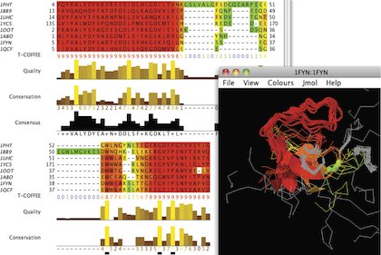

Loading and viewing T-COFFEE Annotation Scores
T-COFFEE score files like the one below can be displayed on the alignment using the Colours→T-COFFEE Scores or Colour → Colour by Annotation options.

Example T-COFFEE Score file
T-COFFEE score files like the one below can be dropped directly onto
the corresponding alignment to visualize alignment confidence
scores.
T-COFFEE, Version_9.02.r1228 (2012-02-16 18:15:12 - Revision 1228 - Build 336) Cedric Notredame CPU TIME:0 sec. SCORE=90 * BAD AVG GOOD * 1PHT : 89 1BB9 : 90 1UHC : 94 1YCS : 94 1OOT : 93 1ABO : 94 1FYN : 94 1QCF : 94 cons : 90 1PHT 999999999999999999999999998762112222543211112134 1BB9 99999999999999999999999999987-------4322----2234 1UHC 99999999999999999999999999987-------5321----2246 1YCS 99999999999999999999999999986-------4321----1-35 1OOT 999999999999999999999999999861-------3------1135 1ABO 99999999999999999999999999986-------422-------34 1FYN 99999999999999999999999999985-------32--------35 1QCF 99999999999999999999999999974-------2---------24 cons 999999999999999999999999999851000110321100001134 1PHT ----------5666642367889999999999889 1BB9 1111111111676653-355679999999999889 1UHC ----------788774--66789999999999889 1YCS ----------78777--356789999999999889 1OOT ----------78877--356789999999997-67 1ABO ----------687774--56779999999999889 1FYN ----------6888842356789999999999889 1QCF ----------6878742356789999999999889 cons 00100000006877641356789999999999889
| Score | 0 | 1 | 2 | 3 | 4 | 5 | 6 | 7 | 8 | 9 |
|---|---|---|---|---|---|---|---|---|---|---|
| RGB colour | 102, 102, 255 | 0, 255, 0 | 102, 255, 0 | 204, 255, 0 | 255, 255, 0 | 255, 204, 0 | 255, 153, 0 | 255, 102, 0 | 255, 51, 0 | 255, 34, 0 |